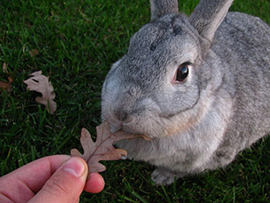
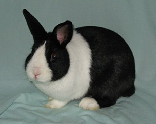
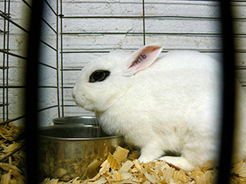

Rabbit breeds are different varieties of the domestic rabbit created through selective breeding or natural selection. Breeds recognized by organizations such as the American Rabbit Breeders' Association (ARBA) or the British Rabbit Council (BRC) may be exhibited and judged in rabbit shows. Breeders attempt to emulate the breed standard by which each breed is judged.
The Chinchilla rabbit is a rabbit breed that has been bred to resemble chinchillas. They are not related to and cannot interbreed with chinchillas, which are species from a different family of rodent. There are three breeds of Chinchilla rabbit recognized by the ARBA. A mutation diluted the yellow pigment in the hairs to almost white, changing in this way the color of the fur of the wild rabbit (agouti) into chinchilla.
The Dutch rabbit, easily identifiable by its characteristic colour pattern, was once the most popular of all rabbit breeds. However, after dwarf rabbits were developed, the popularity of the Dutch rabbit dwindled. Nevertheless, the Dutch rabbit remains one of the top ten most popular breeds worldwide. "Although the name suggests that the Dutch rabbit is from the Netherlands, it was actually developed in England. During the 1830s rabbits were imported to England from Ostend in Belgium every week for the meat market. Amongst these rabbits was a breed known as the Petit Brabançon, as it originated from Brabant in Flanders. The Petit Brabançon may still be found in paintings from the fifteenth century. The Dutch rabbit has its genetic roots in this old breed. The Petit Brabançon would often display Dutch markings, and breeders in England selected those with even markings, fixing those markings into the breed we know today."
The Dwarf Hotot is one of the more recent breeds to be recognized by the ARBA, gaining acceptance in 1984. It has never been without a strong following, but also has never been among the most popular breeds[citation needed]. There’s an unusual story behind this breed’s development. The much larger Blanc de Hotot was produced in the early 1900s in an effort to produce a black-eyed white rabbit for meat and fur. In that era, large rabbits were valued for their commercial value. But in later years, big bunnies went out of style and people started pursuing dwarf breeds.
